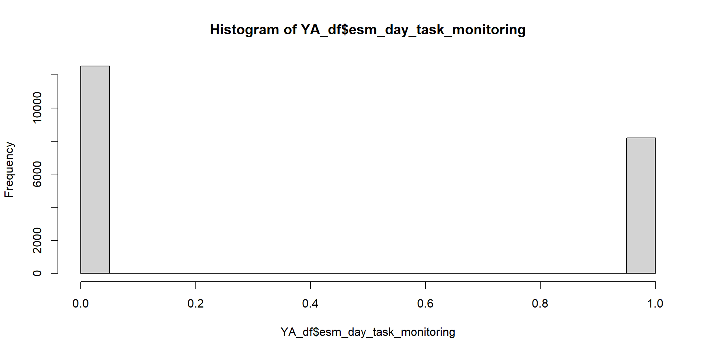
ESM_project
Original Path model
This it the original path model to be tested :
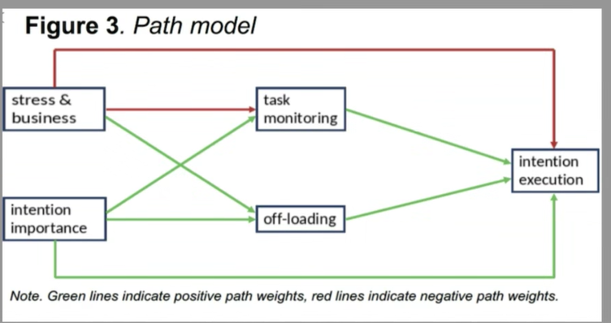
Figure 1. Hypothesised path model
Extended model
This model can be extended to accommodate partition of variance between- and within- participants:

Extended hypothesised path model
Within-between partitioning

Extended hypothesised path model
Effect of stress

Extended hypothesised path model
Effect of business

Extended hypothesised path model
Effect of Importance

Participants
| Participants by age group | |
|---|---|
| agegroup | n_participants |
| MAA | 103 |
| YA | 107 |
[1] 210the df looks like this:
# A tibble: 20 × 15
ID day time intention esm_day_stress esm_day_business
<chr> <dbl> <dbl> <chr> <dbl> <dbl>
1 AM05UN20 1 1 Brief abgeben 3 2
2 AM05UN20 1 2 Brief abgeben 4 3
3 AM05UN20 1 3 Brief abgeben 4 5
4 AM05UN20 1 4 Brief abgeben 4 4
5 AM05UN20 1 5 Brief abgeben NA NA
6 AM05UN20 1 1 Präsentation fertigstel… 3 2
7 AM05UN20 1 2 Präsentation fertigstel… 4 3
8 AM05UN20 1 3 Präsentation fertigstel… 4 5
9 AM05UN20 1 4 Präsentation fertigstel… 4 4
10 AM05UN20 1 5 Präsentation fertigstel… NA NA
11 AM05UN20 1 1 Geschwister treffen 3 2
12 AM05UN20 1 2 Geschwister treffen 4 3
13 AM05UN20 1 3 Geschwister treffen 4 5
14 AM05UN20 1 4 Geschwister treffen 4 4
15 AM05UN20 1 5 Geschwister treffen NA NA
16 AM05UN20 2 1 Kaffe trinken gehen 2 2
17 AM05UN20 2 2 Kaffe trinken gehen 2 3
18 AM05UN20 2 3 Kaffe trinken gehen 4 4
19 AM05UN20 2 4 Kaffe trinken gehen 5 5
20 AM05UN20 2 5 Kaffe trinken gehen 5 5
# ℹ 9 more variables: esm_day_task_monitoring <dbl>, esm_day_stress_avg <dbl>,
# esm_daybusiness_avg <dbl>, esm_day_task_monitoring_avg <dbl>,
# esm_evening_intention_importance_t1 <dbl>, esm_evening_off_loading <dbl>,
# esm_evening_intention_execution <dbl>, age_group <dbl>, agegroup <chr>Preprocessing
- Rescale PM to range between 0 and 1
Monitoring
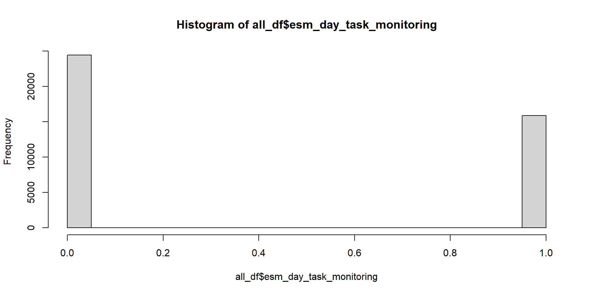
Rescale offloading
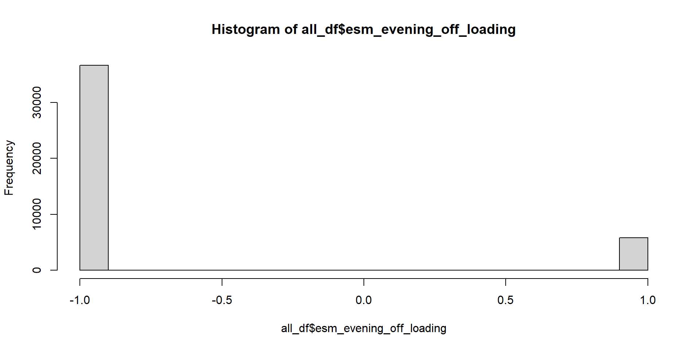
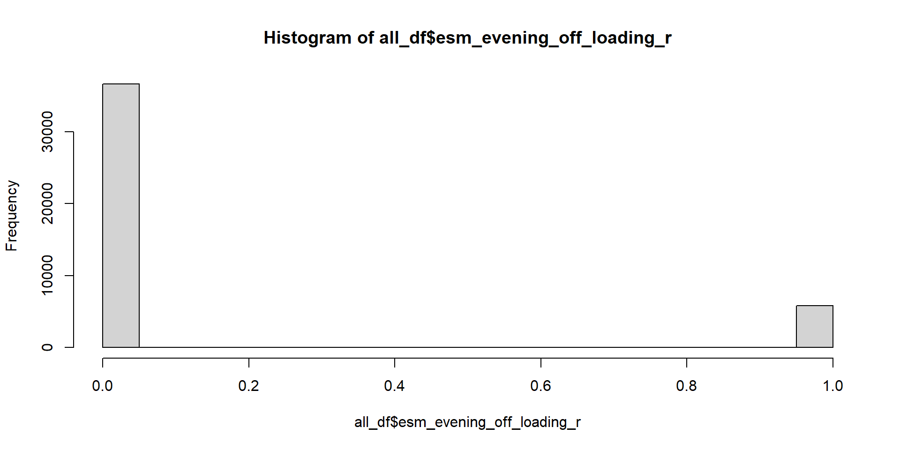
Reshaping
- The dataset as it is now is good to test hypotheses on the variables that vary within day, e.g. stress, business, monitoring.
- Reshape the dataset so there is only one unique intention per day, which is our base level.
RTeshaped dataset
# A tibble: 20 × 43
# Groups: ID, day, intention [20]
ID day time intention esm_day_stress esm_day_business
<chr> <dbl> <dbl> <chr> <dbl> <dbl>
1 AM05UN20 1 1 Brief abgeben 3 2
2 AM05UN20 1 4 Geschwister treffen 4 4
3 AM05UN20 1 5 Präsentation fertigstel… NA NA
4 AM05UN20 2 4 Freund besuchen 5 5
5 AM05UN20 2 2 Kaffe trinken gehen 2 3
6 AM05UN20 2 2 telefonieren 2 3
7 AM05UN20 3 5 Präsentation fertigstel… 4 5
8 AM05UN20 3 5 aufräumen 4 5
9 AM05UN20 3 5 mit Freundin spielen 4 5
10 AM05UN20 4 1 13 Uhr zum Geburtstag g… 3 4
11 AM05UN20 4 2 mit guter Laune aufsteh… 4 5
12 AM05UN20 4 5 nicht einschüchtern las… 3 2
13 AM05UN20 5 2 18 Uhr bereitmachen für… 3 4
14 AM05UN20 5 3 Motivation zeigen 4 5
15 AM05UN20 5 2 ausschlafen 3 4
16 AM05UN20 6 2 Praktikumsplatz suchen 3 4
17 AM05UN20 6 3 Präsentation fertigstel… 4 4
18 AM05UN20 6 4 mit Freunden treffen 5 4
19 AM05UN20 7 2 Präsentation fertigstel… 5 5
20 AM05UN20 7 1 meinem Freund eine Freu… 5 5
# ℹ 37 more variables: esm_day_task_monitoring <dbl>, esm_day_stress_avg <dbl>,
# esm_daybusiness_avg <dbl>, esm_day_task_monitoring_avg <dbl>,
# esm_evening_intention_importance_t1 <dbl>, esm_evening_off_loading <dbl>,
# esm_evening_intention_execution <dbl>, age_group <dbl>, agegroup <chr>,
# esm_evening_off_loading_r <dbl>, mean_stress <dbl>, mean_business <dbl>,
# grand_mean_esm_stress <dbl>, grand_sd_esm_stress <dbl>,
# grand_mean_esm_day_business <dbl>, grand_sd_esm_day_business <dbl>, …Some particiants have more or less intention per day
[1] "Number of unique intentions per day"[1] 3 4 2 1[1] "Participants who reported 4 intentions in some days:" [1] "CH09LD19" "EK13AN09" "EL05AN19" "EL08TZ04" "EL09ST09" "ER06AH19"
[7] "ER06SA06" "ER08IG13" "ER09AN17" "ER11RD06" "GG06ER28" "IA10CO01"
[13] "IA10CO06" "KE06RD04" "LE05GI03" "LE05GI07" "LO08ZO13" "LU03IR19"
[19] "LU17UZ09" "be08rd25"Distributions
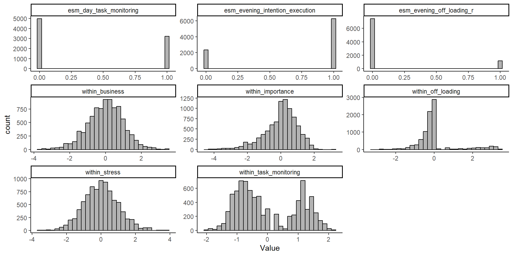
Check the intraclass correlation coefficient (ICC)
[1] "ICC PM YA:"[1] 0.1332206[1] "ICC PM MAA:"[1] 0.1889952Test the effect of day on intention execution
| esm_evening_intention_execution | |||
|---|---|---|---|
| Predictors | Odds Ratios | CI | p |
| (Intercept) | 2.93 | 2.65 – 3.25 | <0.001 |
| day c | 1.02 | 1.00 – 1.03 | 0.032 |
| agegroup c | 1.46 | 1.20 – 1.79 | <0.001 |
| day c × agegroup c | 0.99 | 0.96 – 1.02 | 0.518 |
| Random Effects | |||
| σ2 | 3.29 | ||
| τ00 ID | 0.42 | ||
| τ11 ID.day.c | 0.00 | ||
| ρ01 ID | 0.07 | ||
| ICC | 0.12 | ||
| N ID | 210 | ||
| Observations | 8626 | ||
| Marginal R2 / Conditional R2 | 0.011 / 0.127 | ||
Do people become more stressed as the go on with the study?
| esm_day_stress_avg | |||
|---|---|---|---|
| Predictors | Estimates | CI | p |
| (Intercept) | 2.44 | 2.37 – 2.52 | <0.001 |
| day c | 0.01 | 0.00 – 0.02 | 0.001 |
| agegroup c | -0.01 | -0.16 – 0.14 | 0.873 |
| day c × agegroup c | -0.01 | -0.02 – 0.01 | 0.300 |
| Random Effects | |||
| σ2 | 0.35 | ||
| τ00 ID | 0.29 | ||
| τ11 ID.day.c | 0.00 | ||
| ρ01 ID | 0.03 | ||
| ICC | 0.49 | ||
| N ID | 210 | ||
| Observations | 8623 | ||
| Marginal R2 / Conditional R2 | 0.004 / 0.492 | ||
Conditional effects of variables on PM
Test the conditional effects of the variables on PM
# predict PM by all the predictors
PM_model<- glmer(esm_evening_intention_execution ~
# within factors
within_off_loading+
within_importance +
within_task_monitoring+
within_business+
within_stress+
# between factors
between_off_loading+
between_importance+
between_task_monitoring+
between_business+
between_stress+
# age
agegroup.c +
# day number as covariate
day.c+
# random effects
(1 within_off_loading+
within_importance +
within_task_monitoring+within_business+day.c| ID),
data = stress_int_red, family = binomial,
control=glmerControl(optimizer="bobyqa",optCtrl=list(maxfun=100000))
)Results
[1] "VIF:" within_off_loading within_importance within_task_monitoring
1.035494 1.012248 1.022608
within_business within_stress between_off_loading
1.377984 1.363174 1.068672
between_importance between_task_monitoring between_business
3.510206 1.030857 1.334370
between_stress agegroup.c day.c
1.224586 3.227334 1.028539 Generalized linear mixed model fit by maximum likelihood (Laplace
Approximation) [glmerMod]
Family: binomial ( logit )
Formula:
esm_evening_intention_execution ~ within_off_loading + within_importance +
within_task_monitoring + within_business + within_stress +
between_off_loading + between_importance + between_task_monitoring +
between_business + between_stress + agegroup.c + day.c +
(1 + within_off_loading + within_importance + within_task_monitoring +
within_business + day.c | ID)
Data: stress_int_red
Control: glmerControl(optimizer = "bobyqa", optCtrl = list(maxfun = 1e+05))
AIC BIC logLik deviance df.resid
8860.9 9099.2 -4396.5 8792.9 8134
Scaled residuals:
Min 1Q Median 3Q Max
-4.8356 -0.7475 0.4292 0.6049 2.3161
Random effects:
Groups Name Variance Std.Dev. Corr
ID (Intercept) 0.431153 0.65662
within_off_loading 0.087833 0.29637 -0.11
within_importance 0.032536 0.18038 -0.33 0.00
within_task_monitoring 0.003376 0.05810 0.30 -0.67 -0.32
within_business 0.008244 0.09080 0.02 0.85 0.14 -0.90
day.c 0.001107 0.03328 0.10 -0.49 0.78 -0.01 -0.16
Number of obs: 8168, groups: ID, 210
Fixed effects:
Estimate Std. Error z value Pr(>|z|)
(Intercept) 1.155073 0.055373 20.860 < 2e-16 ***
within_off_loading 0.399191 0.052172 7.652 1.99e-14 ***
within_importance 0.383427 0.031350 12.231 < 2e-16 ***
within_task_monitoring 0.089537 0.029348 3.051 0.00228 **
within_business 0.092306 0.035028 2.635 0.00841 **
within_stress -0.025578 0.033189 -0.771 0.44090
between_off_loading 0.175535 0.058138 3.019 0.00253 **
between_importance 0.191427 0.106527 1.797 0.07234 .
between_task_monitoring 0.074035 0.055592 1.332 0.18294
between_business 0.037197 0.062312 0.597 0.55054
between_stress -0.019220 0.059525 -0.323 0.74678
agegroup.c 0.021434 0.201204 0.107 0.91516
day.c 0.015756 0.007658 2.058 0.03964 *
---
Signif. codes: 0 '***' 0.001 '**' 0.01 '*' 0.05 '.' 0.1 ' ' 1optimizer (bobyqa) convergence code: 0 (OK)
boundary (singular) fit: see help('isSingular')SEM - path model. Generalized linear-mixed effect path model - bayesian estimation
# first, we predict PM from all the predictors
PM_model <-bf(esm_evening_intention_execution ~ # fixed effects
within_stress*agegroup.c +
within_importance*agegroup.c +
within_task_monitoring*agegroup.c +
within_off_loading*agegroup.c +
within_business*agegroup.c+
between_stress*agegroup.c +
between_task_monitoring*agegroup.c +
between_off_loading*agegroup.c +
between_importance*agegroup.c+
between_business*agegroup.c+day.c+
(1 + within_stress +
within_business+
within_importance +
within_task_monitoring +
within_off_loading || ID), # random intercepts and slopes
family = bernoulli()) # we have a binary outcome
# predicting monitoring from stress and importance
monitoring_model<- bf(esm_day_task_monitoring ~
within_stress*agegroup.c +
within_importance*agegroup.c +
within_business*agegroup.c+
between_stress*agegroup.c+
between_importance*agegroup.c+
between_business+day.c+
(1+within_stress+
within_business+
within_importance+
day.c||ID),
family = bernoulli()) # mixture
# predicing off_loading from stress and imortance
offloading_model<-bf(esm_evening_off_loading_r ~
within_stress*agegroup.c +
within_importance*agegroup.c+
within_business*agegroup.c+
between_stress*agegroup.c+
between_importance*agegroup.c+
between_business*agegroup.c+ day.c+
(1+within_stress+
within_importance+
within_business+
day.c||ID), family = bernoulli() )#
# set weakly informative priors
priors <- c(
# Fixed effects: assume standardized predictors
prior(normal(0, 0.5), class = "b", resp = "esmeveningintentionexecution"),
prior(normal(0, 0.5), class = "b", resp = "esmdaytaskmonitoring"),
prior(normal(0, 0.5), class = "b", resp = "esmeveningoffloadingr")
# all the rest is left as defauls
#
# # SD of random effects (hierarchical structure)
# prior( student_t(3, 0, 2.5) , class = "sd", resp = "esmeveningintentionexecution"),
# prior(student_t(3, 0, 2.5) , class = "sd", resp = "esmdaytaskmonitoring"),
# prior(student_t(3, 0, 2.5), class = "sd", resp = "esmeveningoffloadingr"),
# #
# # Correlation priors among random effects
# # prior(lkj(2), class = "cor"), # same across responses
#
# # Residual SDs for continuous outcomes
# prior(exponential(1), class = "sigma", resp = "esmdaytaskmonitoring"),
# prior(exponential(1), class = "sigma", resp = "esmeveningoffloadingr")
)
# fit thestress_int_red# fit the model
fit1 <- brm(
PM_model+
monitoring_model +
offloading_model +
set_rescor(F),
prior = priors,
sample_prior = "yes",
data = stress_int_red,
chains = 4, cores = 4,
iter = 2000,
warmup = 1000
#,backend = "cmdstanr"
)Posterior summary
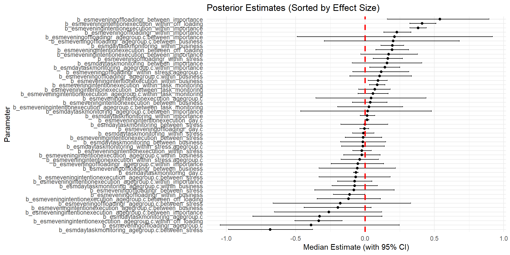
Path model results

Extended hypothesised path model
Moderation of Age group on between stress-within task monitoring path
| esm_day_task_monitoring | |||
|---|---|---|---|
| Predictors | Odds Ratios | CI | p |
| (Intercept) | 0.59 | 0.49 – 0.71 | <0.001 |
| between stress | 0.69 | 0.58 – 0.83 | <0.001 |
| agegroup [YA] | 1.09 | 0.83 – 1.42 | 0.536 |
| between stress × agegroup [YA] |
2.08 | 1.57 – 2.76 | <0.001 |
| Random Effects | |||
| σ2 | 3.29 | ||
| τ00 ID | 0.82 | ||
| ICC | 0.20 | ||
| N ID | 210 | ||
| Observations | 8171 | ||
| Marginal R2 / Conditional R2 | 0.032 / 0.225 | ||
Plot moderation of Age group on between stress-within task monitoring path
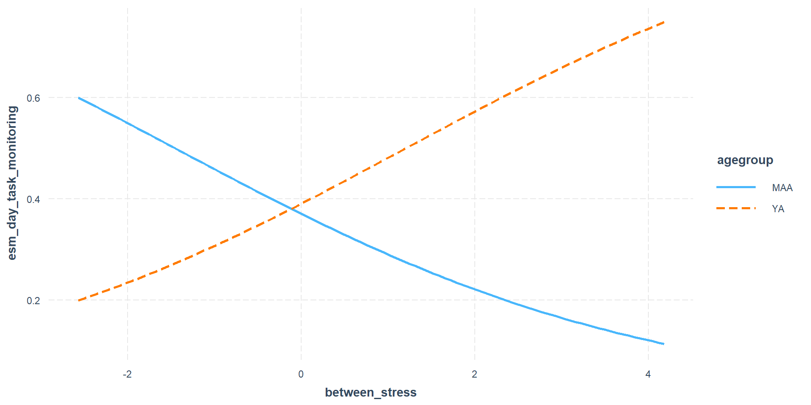
Test the mediation of monitoring
Hypothesis Tests for class b:
Hypothesis Estimate Est.Error CI.Lower CI.Upper Evid.Ratio
1 (esmeveningintent... = 0 0.02 0.01 0.01 0.03 0.18
Post.Prob Star
1 0.15 *
---
'CI': 90%-CI for one-sided and 95%-CI for two-sided hypotheses.
'*': For one-sided hypotheses, the posterior probability exceeds 95%;
for two-sided hypotheses, the value tested against lies outside the 95%-CI.
Posterior probabilities of point hypotheses assume equal prior probabilities.[1] "Bayes Factor for h_mediation is 5.53134579935939"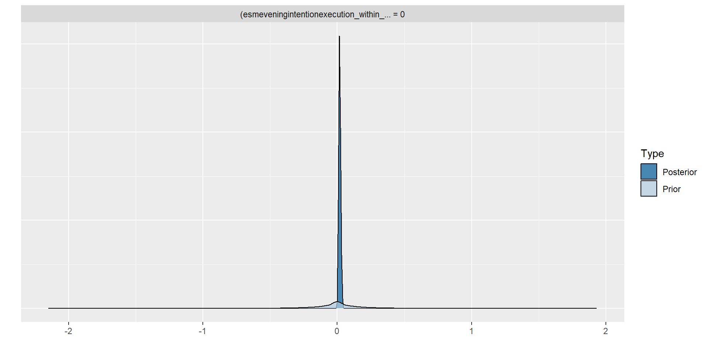
Test moderated mediation - Age as moderator, off-loading as a mediator
Moderation model
Generalized linear mixed model fit by maximum likelihood (Laplace
Approximation) [glmerMod]
Family: binomial ( logit )
Formula: esm_evening_intention_execution ~ within_off_loading * agegroup +
(within_off_loading | ID)
Data: stress_int_red
AIC BIC logLik deviance df.resid
9571.4 9620.9 -4778.7 9557.4 8619
Scaled residuals:
Min 1Q Median 3Q Max
-3.6160 -0.9707 0.4621 0.6220 2.0074
Random effects:
Groups Name Variance Std.Dev. Corr
ID (Intercept) 0.43321 0.6582
within_off_loading 0.06023 0.2454 -0.42
Number of obs: 8626, groups: ID, 210
Fixed effects:
Estimate Std. Error z value Pr(>|z|)
(Intercept) 1.29017 0.07643 16.880 < 2e-16 ***
within_off_loading 0.23164 0.05461 4.242 2.22e-05 ***
agegroupYA -0.34823 0.10549 -3.301 0.000963 ***
within_off_loading:agegroupYA 0.33695 0.08180 4.119 3.80e-05 ***
---
Signif. codes: 0 '***' 0.001 '**' 0.01 '*' 0.05 '.' 0.1 ' ' 1
Correlation of Fixed Effects:
(Intr) wthn__ aggrYA
wthn_ff_ldn -0.084
agegroupYA -0.714 0.081
wthn_ff_:YA 0.080 -0.606 -0.068Plot moderation
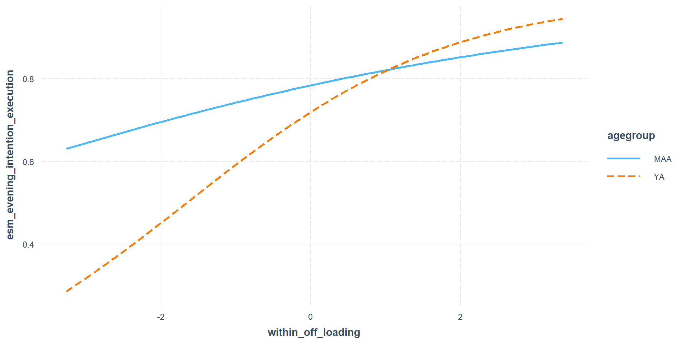
Posterior predictive check
PPC constructs the posterior distribution over the parameters and simulate their distribution - if it approximates the distribution of observed data, the model is a good fit
Prospective memory
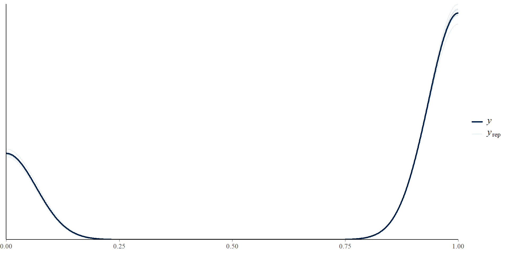
Posterior predictive check
Task Monitoring
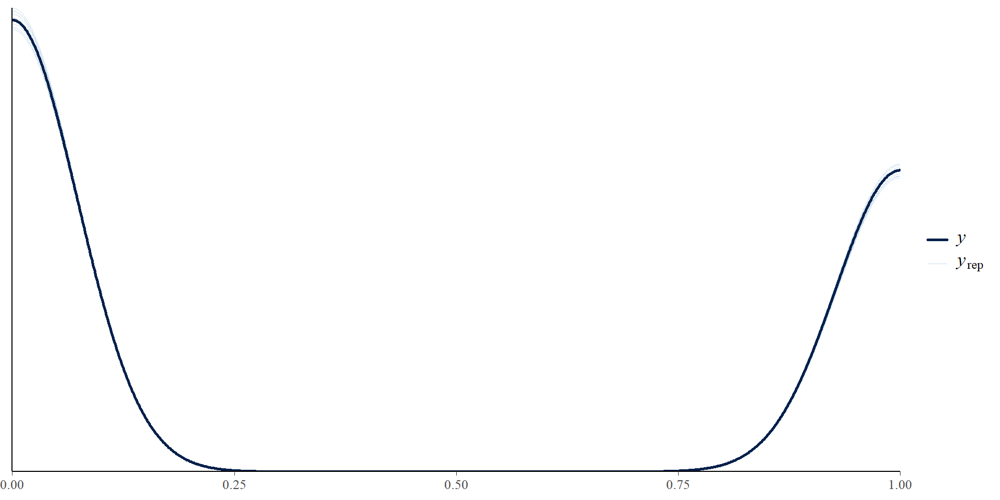
Posterior predictive check
Off Loading
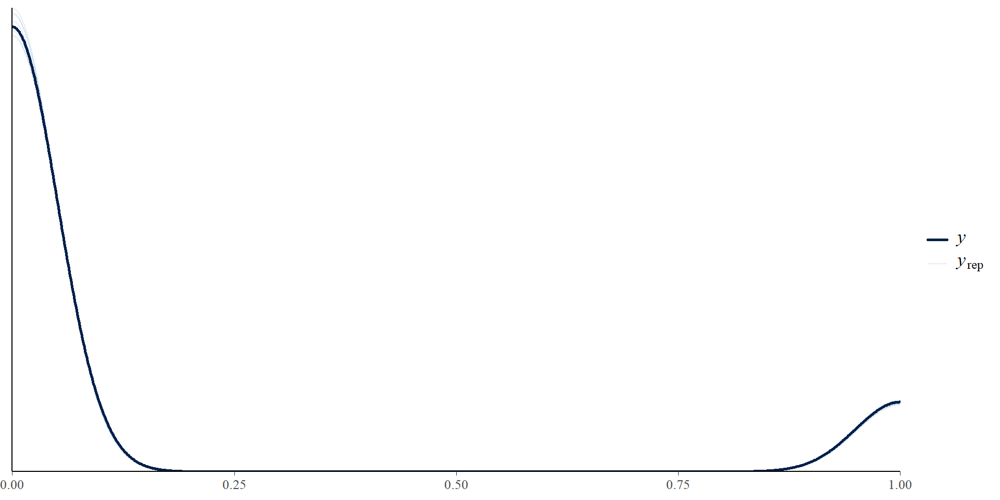